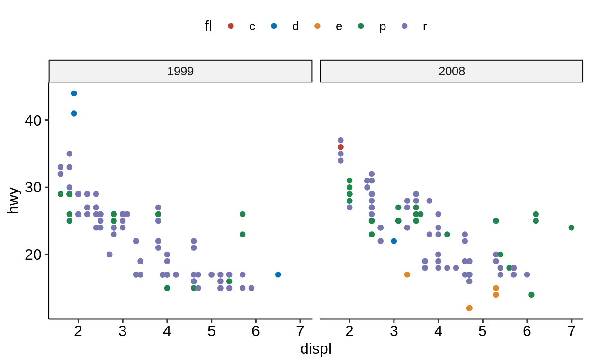
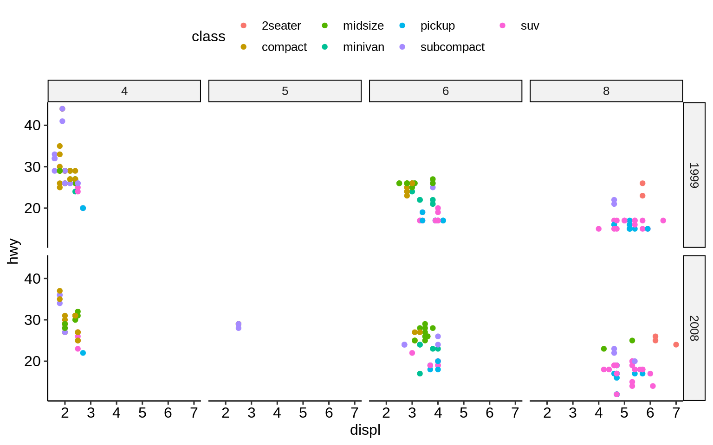

2 Visualization
Embracing the grammar of graphics.
This chapter discusses plotting with the ggplot2 package.
Figure 2.1: © Allison Horst
2.1 Basics for visualisation in R using {ggplot2}
Click here to show setup code.
In the {tidyverse} the standard package for visualization is {ggplot2}. The functions of this package follow a quite unique logic (the “grammar of graphics”) and therefore require a special syntax. In this section we want to give a short introduction, how to get started with {ggplot2}.

Figure 2.2: © Allison Horst
2.1.1 Creating the plot skeleton: ggplot()
The main function in the package is ggplot(), which prepares/creates a graph.
By setting the arguments of the function, you can:
- Choose the dataset to be plotted (argument
data) - Choose the mapping of the variables to the axes (or further forms of setting apart data) in the argument
mapping. This argument takes the result of the functionaes(), which you will get to know in many different examples.

This created only an empty plot, because we did not tell {ggplot2} which geometry we want to use to display the variables we set in the ggplot() call.
We do this by adding (with the help of the + operator after the ggplot()-call) a different function starting with geom_ to provide this information.

This is maybe the most basic plot you can create.
To map a different variable than disp to the x-axis, change the respective variable name in the aes() argument.

You can exchange the variables to be plotted freely, without changing anything else to the rest of the code.

Always good to have: The ggplot2 cheatsheet (https://github.com/rstudio/cheatsheets/blob/master/data-visualization-2.1.pdf).
2.1.2 What is a “statistical graphic”?
Wilkinson (2005) defines a grammar to describe the basic elements of a statistical graphic:
“[…] a statistical graphic is a mapping from data to aesthetic attributes (colour, shape, size) of geometric objects (points, line, bars).”
(Wickham, 2009)
2.1.3 Terminology
Data: The data to visualize – consists of variables and observations.
Geoms: Geometric objects which represent the data (points, lines, polygons, etc.).
Mappings: Match variables with aesthetic attributes of the (geometric) objects.
Scales: Mapping of the “data units” to “physical units” of the geometric objects (e.g. length, diameter or color); defines the legend.
Coord: System of coordinates, mapping of the data to a two dimensional plain of the graphic; defines the axes and grid.
Stats: Statistical transformation of the data (5 point summary, classification, etc.).
Facetting: Division and illustration of data subsets, also known as “Trellis” images.
2.1.4 The Grammar of graphics …
is …
a formal guideline which describes the dependencies between all elements of a statistical graphic.
isn’t …
- a manual which tells us which graphic should be created for a given question.
- a specification how a statistical graphic should look like.
2.1.5 About {ggplot2}
## Package: ggplot2
## Version: 3.2.1
## Title: Create Elegant Data Visualisations Using the Grammar of Graphics
## Depends: R (>= 3.2)
## Imports: digest, grDevices, grid, gtable (>= 0.1.1), lazyeval, MASS, mgcv,
## reshape2, rlang (>= 0.3.0), scales (>= 0.5.0), stats, tibble,
## viridisLite, withr (>= 2.0.0)
## License: GPL-2 | file LICENSE
## URL: http://ggplot2.tidyverse.org, https://github.com/tidyverse/ggplot2
## BugReports: https://github.com/tidyverse/ggplot2/issues
## Encoding: UTF-8
## Author: Hadley Wickham [aut, cre], Winston Chang [aut], Lionel Henry [aut],
## Thomas Lin Pedersen [aut], Kohske Takahashi [aut], Claus Wilke [aut],
## Kara Woo [aut], Hiroaki Yutani [aut], RStudio [cph]
## Maintainer: Hadley Wickham <hadley@rstudio.com>
##
## -- File:2.2 geom_* functions
Click here to show setup code.
geom_* functions are added to the main ggplot() call via the “+” operator and
(usually) placed on a new line.
A list of all available “geoms” can be found here:
https://ggplot2.tidyverse.org/reference/#section-layer-geoms
The most popular ones are
geom_point()geom_histogram()geom_boxplot()geom_bar()
The geom_* family can be divided into three parts:
One variable plots
geom_hist()geom_bar()- etc.
Two variable plots
geom_point()geom_line()geom_boxplot()- etc.
Three variables plots
geom_raster()geom_sf()geom_tile()- etc.
2.2.1 Arguments
geom_* functions have the same basic arguments as ggplot().
In addition, they come with more arguments specific to the respective “geom”.
stat
The stat parameter defines a statistical transformation:
if set to
"identity": No transformationif set to
boxplot: Boxplot transformationetc.
position
The same applies to the position argument.
In the example below, points are not adjusted and just visualized where they appear in the data.
In the case of boxplots, a special position arrangement function is used to arrange everything nicely: position_dodge2() (here denoted by position = "dodge2").
geom_point(mapping = NULL, data = NULL, stat = "identity",
position = "identity", ..., na.rm = FALSE, show.legend = NA,
inherit.aes = TRUE)
geom_boxplot(mapping = NULL, data = NULL, stat = "boxplot",
position = "dodge2", ..., outlier.colour = NULL,
outlier.color = NULL, outlier.fill = NULL, outlier.shape = 19,
outlier.size = 1.5, outlier.stroke = 0.5, outlier.alpha = NULL,
notch = FALSE, notchwidth = 0.5, varwidth = FALSE, na.rm = FALSE,
show.legend = NA, inherit.aes = TRUE)geom_boxplot() needs one variable to be of class character or factor (better) to initiate the grouping.
## [1] "character"2.2.2 Combining geoms
Multiple geom_* functions can be used in one plot.
A combination that is often used together is geom_point() and geom_smooth()

Unless specified differently in the geom_*() call, all geoms will use the same variables.
2.2.3 Summary
The modular principle of ggplot2 enables:
- the combination of any geometric objects (geoms).
- a high flexibility and customizability
An extensive description of all geometric objects can be found on the ggplot2 website https://ggplot2.tidyverse.org/reference/.
Exercises
2.3 Two variable plots
Click here to show setup code.
“Two variable plots” can be split into sub-categories:
Continuous X and Y
Continuous X and discrete Y (and vice-versa)
Discrete X and Y

2.4 One variable plots
Click here to show setup code.
This type of plots visualizes ONE variable in a certain way.
To do this in a 2D space, a statistical transformation of the variable is required for the missing axis.
2.4.1 Continuous variables
Histogram: Most common way - grouping the variable into equal bins
geom_density(),geom_freq(),geom_dotplot()andgeom_area()are mainly doing the same asgeom_hist()
We supply only one variable to the mapping argument with the help of aes().
This one is automatically grouped into 30 bins.
## `stat_bin()` using `bins = 30`. Pick better value with
## `binwidth`.2.4.2 Discrete variables
For discrete data, there is actually only one visualization method - the bar plot.
Note the difference of geom_bar() compared to geom_hist().

Exercises
2.5 Colors and shape
Click here to show setup code.
2.5.1 Static colors
There are many ways to set a color for a specific geom. The simplest is to set all observations of a geom to a dedicated color, supplied as a character value.

2.5.2 Dynamic colors
Dynamic colors, which depend on a variable of the dataset, need to be passed within an aes() call.
A direct specification like in the example above with color = "blue" only works for static colors.
Good to know: While it is possible to include color = class directly in the aes() call of the ggplot() function, it is recommended to set it within the particular geom.
This is for two reasons:
- When working with multiple geoms, you can use different mappings for each geom without any possibility of conflicts
- When reading the code, it becomes more clear which settings apply to which geoms
Discrete
Different colors can be mapped to the values of a variable by supplying a variable of the dataset.
The class variable is discrete and leads to a discrete color scale.

Continuous
The cty attribute is continuous, the color scale is adapted accordingly.

2.5.3 Shape
One more degree of freedom is the shape of the symbols to be plotted.
2.5.4 Combining color and shape
Color and shape can be combined.
ggplot(
data = mpg,
mapping = aes(
x = displ,
y = hwy,
)
) +
geom_point(aes(color = class, shape = drv))
And last but not least, the size of the plotted symbols can be linked to numeric values of the mapped variable.
You can mix different aesthetic mappings in order to produce a plot with densely packed information. However, be aware that adding too much information to a plot does not necessarily make it better.
2.5.5 Transparency
Semi-transparency is another way to better display your data when observations are overlapping. This is useful to get an impression of how many data points share the same coordinates.
2.5.6 What can go wrong
If you try to specify a color in the mapping-argument of the main ggplot() call, you will face an error since a mapping of a variable to an aesthetic is expected.
try(print(
ggplot(
data = mpg,
mapping = aes(
x = displ,
y = hwy,
color = blue
)
) +
geom_point()
))## Error in FUN(X[[i]], ...) : object 'blue' not foundR treats objects without quotation marks in a special way, expecting them to be variables.
Since blue is not a variable of mpg, this did not work.
Use quotation marks if you mean a string, as opposed to a variable or object name.
## # A tibble: 234 x 11
## manufacturer model displ year cyl trans drv cty hwy
## <chr> <chr> <dbl> <int> <int> <chr> <chr> <int> <int>
## 1 audi a4 1.8 1999 4 auto… f 18 29
## 2 audi a4 1.8 1999 4 manu… f 21 29
## 3 audi a4 2 2008 4 manu… f 20 31
## # … with 231 more rows, and 2 more variables: fl <chr>,
## # class <chr>
## [1] "mpg"So what if we pass the color as a character variable?
At least there was no error, but now the constant value blue is mapped to the first default color of the color mapping, which happens to be red.
We could have been fooled, if it had been blue.
Recall, it is best to specify geom related mappings with the respective geom function.

Exercises
https://krlmlr.github.io/vistransrep/2019-11-zhr/scatter3.html
2.6 Labels
Click here to show setup code.
For character variables there is further way of integrating its value to a plot.
geom_text() takes a label argument, which influences the plot in the following way.
Let’s try to map this argument to a variable (here: drv) of our dataset in the mapping argument of ggplot().

Right, of course we need to pass the variable without quotation marks, otherwise it is interpreted as a (constant) character variable.
When changing this, a vector with the values of the variable is passed on to geom_text().
This is one way of including the values of character variables in a plot.
When adding more than one geom()-function, multiple geometries are added to the plot.
However, because geom_point() has no support for passing a label, we can only use this mapping in geom_text().
ggplot(
data = mpg,
mapping = aes(x = displ, y = hwy)
) +
geom_point() +
geom_text(aes(label = drv))Since this looks just slightly odd, let’s try to make it more apparent, what is happening.
2.7 Themes
Click here to show setup code.
In this section we are looking at the use of visual themes to easily change the look and feel of a plot.
We start with the introduction of the default theme – theme_grey() function.
Change the default theme_grey() to a more traditional black-and-white theme:

Also in this scheme the color aesthetic works as it normally does. The black-and-whiteness only relates to the background.
ggplot(
data = mpg,
mapping = aes(x = displ, y = hwy)
) +
geom_point(aes(color = class)) +
theme_bw()Calling the function theme() after a theme_...() call let’s you tweak certain aspects of the theme.
Some plots work better with the legend at the bottom.
ggplot(
data = mpg,
mapping = aes(x = displ, y = hwy)
) +
geom_point(aes(color = class)) +
theme_bw() +
theme(legend.position = "bottom")
Mind that theme_...() functions overwrite all previous settings of theme():
ggplot(
data = mpg,
mapping = aes(x = displ, y = hwy)
) +
geom_point(aes(color = class)) +
theme(legend.position = "bottom") +
theme_bw()
The first argument of each theme_...() function is base_size, which refers to the font size of all elements in the plot.
ggplot(
data = mpg,
mapping = aes(x = displ, y = hwy, color = class)
) +
geom_point() +
theme_bw(16)If we were asked to suggest themes, we’d go for
ggplot2::theme_minimal()hrbrthemes::theme_ipsum()ggpubr::theme_pubr()
Here is how ggpubr::theme_pubr() looks like.
ggplot(
data = mpg,
mapping = aes(x = displ, y = hwy, color = class)
) +
geom_point() +
ggpubr::theme_pubr()
Also from here onward we will use theme_pubr() as the default theme for plots.
This can be done by setting
2.8 Scales
Click here to show setup code.
In this section we want to spend some time getting to know how to customize the labels and scales of plots using {ggplot2}.
We start with a pretty basic plot using the mpg-tibble which comes with the {tidyverse}.

2.8.1 labs()
With labs() you can label all sorts of aesthetics (axes, color mapping, …).
Additionally you can set the title/subtitle and also add a caption and a tag.
ggplot(
data = mpg,
mapping = aes(x = displ, y = hwy, color = class)
) +
geom_point() +
labs(
x = "Displacement",
y = "Highway mileage\n[miles per gallon]",
color = "Car class",
title = "Highway mileages depending on displacement",
subtitle = "By car class"
)
2.8.2 Axes
There is a plethora of scale_...() functions available in {ggplot2}, which influence the axes.
For example there is a function to change the scale of an axis to a logarithmic scale.
ggplot(
data = mpg,
mapping = aes(x = displ, y = hwy, color = class)
) +
geom_point() +
scale_x_log10()Be careful: you can set the name of an axis in both the labs() function and the scale_...() functions.
If you do both, only the name set in the latter will prevail.
ggplot(
data = mpg,
mapping = aes(x = displ, y = hwy, color = class)
) +
geom_point() +
labs(
x = "Displacement"
) +
scale_x_log10(name = "xxx")For more control over discrete and continuous axis labels, limits and breaks, the scale_<axis name>_<variable type> functions exist, e.g. scale_x_continuous().
These enable custom axis breaks and labels if the ones autogenerated from the data are not sufficient.
ggplot(mpg, aes(displ, hwy)) +
geom_point() +
scale_x_continuous(limits = c(2, 6), breaks = c(2, 4, 6))## Warning: Removed 27 rows containing missing values
## (geom_point).Values not falling into the custom limits will be silently droppend including a warning message.
2.8.3 Color scale
Another type scale_...()-type function relates to the color-aesthetic.
These functions affect the palette that is used for the color mapping.
By default, scale_color_hue() will be used for categorical variables.
ggplot(
data = mpg,
mapping = aes(x = displ, y = hwy)
) +
geom_point(aes(color = class)) +
scale_color_hue()
To change the color palette, pass a palette-function of your liking in the form of
scale_color_<name>scale_fill_<name>
Whether to use fill or color depends on what keyword has been used for applying the color.
Points are colored by using the “color” keyword.
So to change the palette for point coloring, one needs to use scale_color_<name>.
A popular color palette is the viridis color palette.
To specify that we are dealing with categorical values, we add a _d at the end which stands for “discrete”.
ggplot(
data = mpg,
mapping = aes(x = displ, y = hwy)
) +
geom_point(aes(color = class)) +
scale_color_viridis_d()To take full control of the colors scale_color_manual() should be used.
Here, color values (either as a string or in hex format) can be bound to a specific factor level.
This is useful if certain levels come with implicit meanings of their color choice. Another helpful scenario is when there are more levels in the data than colors supported by the palette (most palettes support between 9-12 levels).
ggplot(
data = mpg,
mapping = aes(x = displ, y = hwy)
) +
geom_point(aes(color = class)) +
scale_color_manual(values = c(
"2seater" = "#000000",
"compact" = "#3355FF",
"midsize" = "#006400",
"minivan" = "#FF5522",
"pickup" = "#66FFFF",
"subcompact" = "#FF0000",
"suv" = "#FF55FF"
))
Review the {ggthemr} package for tools that help with establishing a “corporate design” for documents.
Exercises
https://krlmlr.github.io/vistransrep/2019-11-zhr/scales.html
2.9 Export & saving
Click here to show setup code.
The default way to export plots in {{ggplot2}} is by using ggsave().
It differs slightly from other “exporting” functions in R because it comes with some smart defaults:
ggsave() is a convenient function for saving a plot. It defaults to saving the last plot that you displayed, using the size of the current graphics device. It also guesses the type of graphics device from the extension.

## Saving 6.5 x 4 in image## Saving 6.5 x 4 in imageThis might seem natural to you but is is not. Let’s compare base R and {{ggplot2}}.
2.9.1 Base R vs. {{ggplot2}}
In base R
one needs to open a specific graphic device first
then create the plot
and close the graphic device again.
Base R plotting functions come with suboptimal defaults
saving in pixels (differs on every monitors)
saving as a square image
no option to specify the DPI (dots per inch)
2.9.2 Storing the plot as an R object
One of the major advantages of ggplot() is that you can save a plot as an R object and modify it later.
This is not possible with base R plots.


## List of 9
## $ data :Classes 'tbl_df', 'tbl' and 'data.frame': 234 obs. of 11 variables:
## ..$ manufacturer: chr [1:234] "audi" "audi" "audi" "audi" ...
## ..$ model : chr [1:234] "a4" "a4" "a4" "a4" ...
## ..$ displ : num [1:234] 1.8 1.8 2 2 2.8 2.8 3.1 1.8 1.8 2 ...
## ..$ year : int [1:234] 1999 1999 2008 2008 1999 1999 2008 1999 1999 2008 ...
## ..$ cyl : int [1:234] 4 4 4 4 6 6 6 4 4 4 ...
## ..$ trans : chr [1:234] "auto(l5)" "manual(m5)" "manual(m6)" "auto(av)" ...
## ..$ drv : chr [1:234] "f" "f" "f" "f" ...
## ..$ cty : int [1:234] 18 21 20 21 16 18 18 18 16 20 ...
## ..$ hwy : int [1:234] 29 29 31 30 26 26 27 26 25 28 ...
## ..$ fl : chr [1:234] "p" "p" "p" "p" ...
## ..$ class : chr [1:234] "compact" "compact" "compact" "compact" ...
## $ layers :List of 1
## ..$ :Classes 'LayerInstance', 'Layer', 'ggproto', 'gg' <ggproto object: Class LayerInstance, Layer, gg>
## aes_params: list
## compute_aesthetics: function
## compute_geom_1: function
## compute_geom_2: function
## compute_position: function
## compute_statistic: function
## data: waiver
## draw_geom: function
## finish_statistics: function
## geom: <ggproto object: Class GeomPoint, Geom, gg>
## aesthetics: function
## default_aes: uneval
## draw_group: function
## draw_key: function
## draw_layer: function
## draw_panel: function
## extra_params: na.rm
## handle_na: function
## non_missing_aes: size shape colour
## optional_aes:
## parameters: function
## required_aes: x y
## setup_data: function
## use_defaults: function
## super: <ggproto object: Class Geom, gg>
## geom_params: list
## inherit.aes: TRUE
## layer_data: function
## map_statistic: function
## mapping: NULL
## position: <ggproto object: Class PositionIdentity, Position, gg>
## compute_layer: function
## compute_panel: function
## required_aes:
## setup_data: function
## setup_params: function
## super: <ggproto object: Class Position, gg>
## print: function
## setup_layer: function
## show.legend: NA
## stat: <ggproto object: Class StatIdentity, Stat, gg>
## aesthetics: function
## compute_group: function
## compute_layer: function
## compute_panel: function
## default_aes: uneval
## extra_params: na.rm
## finish_layer: function
## non_missing_aes:
## parameters: function
## required_aes:
## retransform: TRUE
## setup_data: function
## setup_params: function
## super: <ggproto object: Class Stat, gg>
## stat_params: list
## super: <ggproto object: Class Layer, gg>
## $ scales :Classes 'ScalesList', 'ggproto', 'gg' <ggproto object: Class ScalesList, gg>
## add: function
## clone: function
## find: function
## get_scales: function
## has_scale: function
## input: function
## n: function
## non_position_scales: function
## scales: list
## super: <ggproto object: Class ScalesList, gg>
## $ mapping :List of 2
## ..$ x: language ~displ
## .. ..- attr(*, ".Environment")=<environment: R_GlobalEnv>
## ..$ y: language ~hwy
## .. ..- attr(*, ".Environment")=<environment: R_GlobalEnv>
## ..- attr(*, "class")= chr "uneval"
## $ theme : list()
## $ coordinates:Classes 'CoordCartesian', 'Coord', 'ggproto', 'gg' <ggproto object: Class CoordCartesian, Coord, gg>
## aspect: function
## backtransform_range: function
## clip: on
## default: TRUE
## distance: function
## expand: TRUE
## is_free: function
## is_linear: function
## labels: function
## limits: list
## modify_scales: function
## range: function
## render_axis_h: function
## render_axis_v: function
## render_bg: function
## render_fg: function
## setup_data: function
## setup_layout: function
## setup_panel_params: function
## setup_params: function
## transform: function
## super: <ggproto object: Class CoordCartesian, Coord, gg>
## $ facet :Classes 'FacetNull', 'Facet', 'ggproto', 'gg' <ggproto object: Class FacetNull, Facet, gg>
## compute_layout: function
## draw_back: function
## draw_front: function
## draw_labels: function
## draw_panels: function
## finish_data: function
## init_scales: function
## map_data: function
## params: list
## setup_data: function
## setup_params: function
## shrink: TRUE
## train_scales: function
## vars: function
## super: <ggproto object: Class FacetNull, Facet, gg>
## $ plot_env :<environment: R_GlobalEnv>
## $ labels :List of 2
## ..$ x: chr "displ"
## ..$ y: chr "hwy"
## - attr(*, "class")= chr [1:2] "gg" "ggplot"2.9.3 Best practices for exporting
Some best practices:
Use a reasonable high DPI. A value of “300” is ok in most cases.
Save in “inches” and not in “pixels”. The latter always differs on screens with different resolutions (
png()uses pixels by default.)Always specify a file name to ensure the right plot is chosen. Do not rely on the default behavior of
ggsave()(even though it might seem convenient) which takes the last visualized plot.An alternative to
ggsave()iscowplot::save_plot()which comes with sensible defaults for multi-plot arrangements.
2.10 Facetting
Click here to show setup code.
“Facetting” (or trellis plots, lattice plots) denotes an idea of dividing a graphic into sub-graphics based on the (categorical) values of one or more variables of a dataset.
The variables used for faceting should be passed encapsulated in vars().
(Before {ggplot2} v3.0.0 the default was to use a formula notation (<variable> ~ <variable>) to specify the faceting variables.)
facet_grid(facets = vars(<variable>),
scales = "fixed",
...)
facet_wrap(rows = vars(<variable>),
cols = vars(<variable>),
scales = "fixed",
...)facet: Variables given via vars() or formula with splitting variable.
scales: Scale of the axes over the sub-graphics.
The position of <variable> in facet_wrap() denotes on which axis the facets will appear:
vars(<variable>)\(\rightarrow\) y-axisvars(), vars(<variable>)\(\rightarrow\) x-axis

2.10.1 facet_wrap()
ggplot(mpg, aes(displ, hwy)) +
geom_point(aes(colour = fl)) +
scale_color_nejm() +
facet_grid(vars(), vars(year))
ggplot(mpg, aes(displ, hwy)) +
geom_point(aes(colour = fl)) +
scale_color_nejm() +
facet_grid(vars(year), vars()) 
Rather than visualizing a 2D-facet plot on x and y, there is also the option to combine both in one axis.
(For this to work, the variables need to be of class factor).
mpg %>%
mutate(manufacturer = as.factor(manufacturer)) %>%
mutate(year = as.factor(year)) %>%
ggplot(aes(displ, hwy)) +
geom_point() +
facet_wrap(vars(manufacturer:year))
This is usually a better setting than doubling the facet labels - but might also be up to personal preference.

2.10.2 facet_grid()
While facet_wrap() tries to act smart and hide non-existing combinations of sub-plots, facet_grid() will create a full matrix of sub-plots for all possible combinations.
Most of the time when using only one categorical variable, facet_wrap() does a good job and is preferred over facet_grid().
However, facet_grid might be preferred in the following cases:
when faceting over >= 2 variables
when plots of empty combinations should be shown
Let’s compare how facet_grid and facet_wrap differ for 2 grouping variables where not all combinations of those contain observations:


2.10.3 Scales
By default, scales are fixed across each facet (scales = "fixed").
This means that all sub-plots should share the same axes.
By setting this argument to either "free_x" or "free_y" one can specify that each each sub-plot should have its own scale.
ggplot(mpg, aes(displ, hwy)) +
geom_point() +
facet_grid(vars(year), vars(cyl), scales = "free_x") +
theme_pubr(base_size = 7)
This only makes sense if the ranges for each facet differ substantially (so not in this example!). This example is good to show the confusion that this setting might introduce. People usually expect to look at equal ranges across facets (unless there is a good reason for it not to) and differing scales make the plot more complicated.
Keep in mind: Visualization should simplify data!
2.10.4 Renaming of facet labels
A non-trivial change that is often applied to facet plots is the (re-)naming of the facet labels.
Facet labels are automatically created based on the factor levels of the respective variable.
However, sometimes the raw factor levels are not descriptive enough.
In these cases, it makes sense to prefix the factor level values with the column name.
This can be achieved by setting the labeller argument of facet_* to label_both.
(An alternative would be to modify the underlying factor levels of the data so that these are descriptive right from the start.)

Exercises
2.11 Extensions
A mass of R packages extending {ggplot2} exists. Many are listed at http://www.ggplot2-exts.org/gallery/.
Here is a selected list of our favorite {ggplot2} extensions including some use examples.
{ggsci}: https://nanx.me/ggsci/
{ggforce}: https://ggforce.data-imaginist.com/
{patchwork}: https://patchwork.data-imaginist.com/
{gganimate}: https://gganimate.com/
{ggtext}: https://github.com/clauswilke/ggtext
{ggiraph}: http://davidgohel.github.io/ggiraph
{ggbeeswarm}: https://github.com/eclarke/ggbeeswarm
{esquisse}: https://dreamrs.github.io/esquisse
( {ggstatsplot}: https://indrajeetpatil.github.io/ggstatsplot )
( {ggedit}: https://github.com/metrumresearchgroup/ggedit )
( {lindia}: https://github.com/yeukyul/lindia )
Click here to show setup code.
2.11.1 {ggsci}
p1 <- ggplot(mpg, aes(manufacturer)) +
geom_bar(aes(fill = fl))
p2 <- ggplot(mpg, aes(displ, hwy)) +
geom_point(aes(colour = fl))library("patchwork")
p1_npg <- p1 + ggsci::scale_fill_npg()
p2_nejm <- p2 + ggsci::scale_color_nejm()
p1_npg + p2_nejm
2.11.2 {ggforce}
ggplot(iris, aes(Petal.Length, Petal.Width, colour = Species)) +
geom_point() +
ggforce::facet_zoom(x = Species == "versicolor")
2.11.3 {gganimate}
ggplot(gapminder, aes(gdpPercap, lifeExp, size = pop, colour = country)) +
geom_point(alpha = 0.7, show.legend = FALSE) +
scale_colour_manual(values = country_colors) +
scale_size(range = c(2, 12)) +
scale_x_log10() +
facet_wrap(~continent) +
labs(title = 'Year: {frame_time}', x = 'GDP per capita', y = 'life expectancy') +
gganimate::transition_time(year) +
ease_aes('linear')## Warning: No renderer available. Please install the gifski, av,
## or magick package to create animated output## NULL2.11.4 {ggtext}
df <- data.frame(
label = c(
"Some text **in bold.**",
"Linebreaks<br>Linebreaks<br>Linebreaks",
"*x*<sup>2</sup> + 5*x* + *C*<sub>*i*</sub>",
"Some <span style='color:blue'>blue text **in bold.**</span><br>And *italics text.*<br>
And some <span style='font-size:18pt; color:black'>large</span> text."
),
x = c(.2, .1, .5, .9),
y = c(.8, .4, .1, .5),
hjust = c(0.5, 0, 0, 1),
vjust = c(0.5, 1, 0, 0.5),
angle = c(0, 0, 45, -45),
color = c("black", "blue", "black", "red"),
fill = c("cornsilk", "white", "lightblue1", "white")
)ggplot(df) +
aes(
x, y,
label = label, angle = angle, color = color,
hjust = hjust, vjust = vjust
) +
ggtext::geom_richtext(
fill = NA, label.color = NA, # remove background and outline
label.padding = grid::unit(rep(0, 4), "pt") # remove padding
) +
geom_point(color = "black", size = 2) +
scale_color_nejm() +
xlim(0, 1) + ylim(0, 1) +
theme_pubr()2.11.5 {ggrepel}
no_repel <- ggplot(mtcars, aes(wt, mpg)) +
geom_text(label = rownames(mtcars), size = 3) +
geom_point(color = "red") +
theme_pubr()with_repel <- ggplot(mtcars, aes(wt, mpg)) +
ggrepel::geom_text_repel(label = rownames(mtcars), size = 3) +
geom_point(color = "red") +
theme_pubr()
2.11.6 {ggiraph}
2.11.7 {ggbeeswarm}
2.11.8 {ggpmisc}
p <- ggplot(mpg, aes(factor(cyl), hwy)) +
stat_summary(geom = "col", fun.y = mean, width = 2 / 3, aes(fill = factor(cyl))) +
labs(x = "Number of cylinders", y = NULL, title = "Means") +
scale_fill_nejm(guide = FALSE)
data.tb <- tibble(
x = 7, y = 44,
plot = list(p +
theme_pubr(8))
)ggplot(mpg, aes(displ, hwy)) +
ggpmisc::geom_plot(data = data.tb, aes(x, y, label = plot)) +
geom_point(aes(colour = factor(cyl))) +
scale_colour_nejm() +
labs(
colour = "Engine cylinders\n(number)"
) +
theme_pubr()